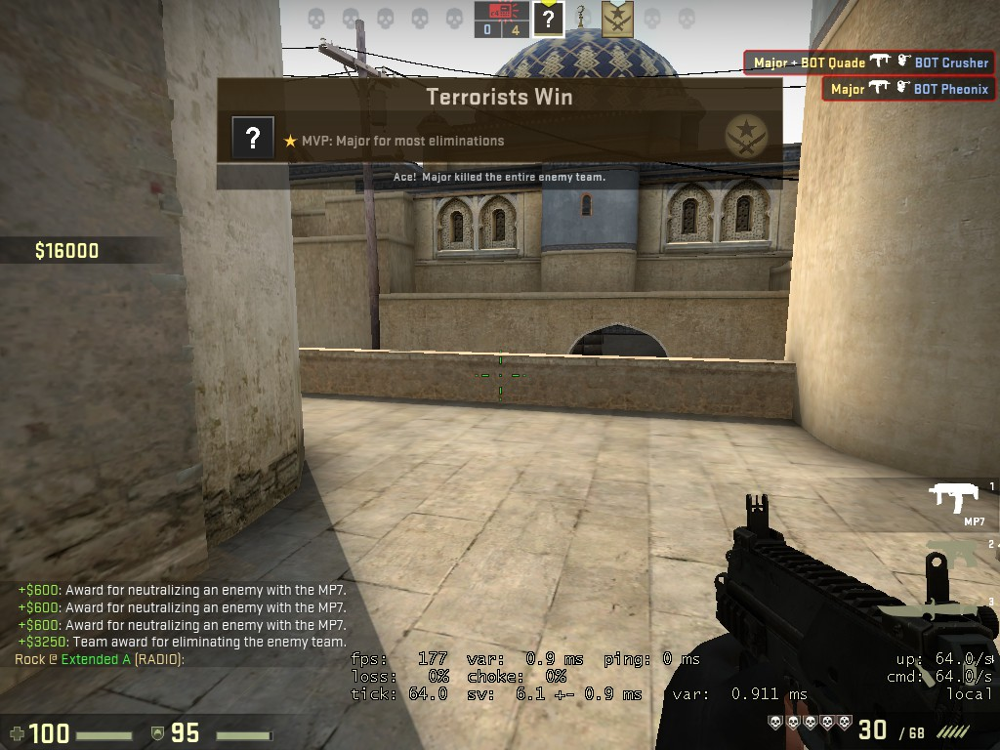

Major
Home - AnubhavSaini.com
Blog - CS:GO
I sometime get aces. Discalimer: I usually play offline since I do not have a very fast or reliable network connection. How do I do it? Smoke and silencer being the usual tools.
